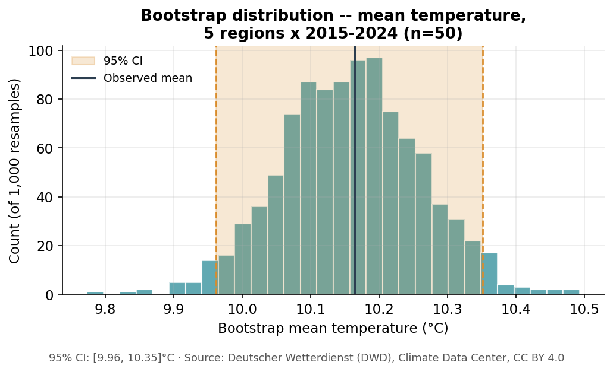

3 Statistical Inference
Guiding question: Can I trust the patterns I observe?
In this area you will learn how to: understand samples and populations, consider probability and uncertainty, interpret confidence intervals, use hypothesis tests and assess whether observed patterns may extend beyond the available data. (Source materials: statistik_uebung, OpenIntro Modern Statistics/IMS Tutorials — see Resources.)
library(tidyverse)
library(infer)
climate <- read_csv("data/clean/dwd_climate_clean.csv")
states <- climate %>% filter(Region != "Deutschland")Code walkthrough
infer— the tidyverse package for statistical inference (confidence intervals, hypothesis tests) used throughout this chapter.
3.1 Sampling and Probability
The rule of representative space. Where and how data is collected dictates what you are allowed to conclude. A pattern discovered in one place applies only to the population that place represents. Our five regions are five specific, real German Bundesländer — Bayern, Sachsen, Nordrhein-Westfalen, Schleswig-Holstein and Baden-Württemberg — not a random sample of “all of Europe,” or even of all sixteen German states.
Population vs. sample. The population is the entire collective universe of individuals, objects or measurements you wish to study — in climate science, measuring every square metre of a region’s atmosphere every instant is impossible. The sample is a manageable subset collected from it. DWD’s own “regional average” is already a sample-based estimate: an area-weighted average of the weather stations within a region, standing in for the temperature of the whole region.
Sampling mechanisms:
- Simple random sampling. Every point in the population has an equal probability of selection — reduces bias, but is rarely how real weather-station networks are built.
- Stratified sampling. The population is divided into distinct, non-overlapping strata and samples are drawn proportionally from each. DWD’s station network is, in effect, stratified by region this way.
- Cluster sampling. The population is divided into geographic clusters; a few clusters are selected at random and every point within them is measured.
Exercise 3.1 — What can (and can’t) you conclude?
Q1. Our five regions were chosen for this chapter because each has a stable definition over 1991–2024 (Chapter 1) — not because they are a random sample of German regions. What can you legitimately claim from this dataset about “Germany’s climate,” and what would be overreach?
3.2 Uncertainty and Confidence Intervals
Visualising uncertainty without formulas. Before z-scores, t-distributions, or rigid equations, we capture variance using computer-intensive resampling. Bootstrapping is a non-parametric method that treats your single downloaded sample as a miniature version of the population, then draws new, synthetic samples from it.
The technical process:
- Original data. You begin with your downloaded sample of size \(n\).
- Resampling with replacement. A computer randomly selects one record, logs its value and puts it back into the pool — repeating this \(n\) times. Because it replaces the data each time, some rows are selected multiple times, some not at all. This creates one “bootstrap sample.”
- The replicates. Repeat step 2 many times (e.g. 1,000), generating 1,000 separate bootstrap samples.
- The bootstrap distribution. Calculate the mean of each of the 1,000 bootstrap samples. Plotting these 1,000 means creates a visual distribution whose width and spread show the structural uncertainty and standard error in your original data.
The percentile confidence interval. To find the 95% CI, sort the 1,000 bootstrap means from lowest to highest, cut off the lowest 2.5% and the highest 2.5%; the middle 95% forms your boundary.
Exercise 3.2 — Bootstrap a confidence interval
boot_dist <- states %>%
filter(Year >= 2015) %>%
specify(response = Temperature_C) %>%
generate(reps = 1000, type = "bootstrap") %>%
calculate(stat = "mean")
ci_95 <- boot_dist %>% get_confidence_interval(level = 0.95, type = "percentile")
visualize(boot_dist) + shade_confidence_interval(endpoints = ci_95)Code walkthrough
filter(Year >= 2015)— keep only 2015–2024 (this gives us \(n = 50\): 5 regions × 10 years).specify(response = Temperature_C)— declare which variable we’re studying;infer’s way of saying “this is the number I care about” before doing anything to it.generate(reps = 1000, type = "bootstrap")— create 1,000 resampled versions of our data (steps 2–3 in the numbered list above).calculate(stat = "mean")— for each of those 1,000 resamples, compute its mean (step 4 above);boot_distnow holds 1,000 means, one per resample.get_confidence_interval(...)— cut off the lowest and highest 2.5% of those 1,000 means; what’s left in the middle is the 95% confidence interval.visualize(...) + shade_confidence_interval(...)— plot the 1,000 means as a histogram and shade the confidence interval on top of it.
Q2. What is your 95% confidence interval for mean temperature across the five regions in 2015–2024 (\(n = 50\): 5 regions × 10 years)? How wide is it — under half a degree, or several degrees?
Q3. In your own words (no formulas), explain to a colleague what a 95% confidence interval does and does not tell them.

Run it yourself and you should get something close to: \(n = 50\), mean \(\approx 10.16\)°C, 95% CI \(\approx\) [9.96, 10.35]°C — a narrow interval, because 50 observations pooled across five regions and ten years averages out a lot of the year-to-year noise you saw in Chapter 2’s trend line.
3.3 Hypothesis Testing
The scenario. Chapter 2 ended by asking whether the gap between 1991–2000 and 2015–2024 is trustworthy, or could be explained by chance alone.
- Null hypothesis (\(H_0\)). The status quo, “no effect”: the true mean temperature is the same in both ten-year windows and the gap you measured is just random year-to-year variation.
- Alternative hypothesis (\(H_A\)). The claim of a real, structural difference: the true mean temperature differs between the early and the recent decade.
Exercise 3.3 — Test a difference between two periods
Analogy before the code: a permutation test asks a very concrete question. If the “early” vs. “recent” label genuinely didn’t matter, and you shuffled which years got which label at random, how often would the reshuffled groups end up as far apart as your real ones? Picture shuffling two decks of labelled cards together and re-dealing them at random, over and over — most reshuffles should land close to zero difference, purely by chance. If your real, unshuffled difference is bigger than almost all 1,000 random reshuffles, that’s evidence the label really does matter.
period_test <- states %>%
filter(Year <= 2000 | Year >= 2015) %>%
mutate(Period = if_else(Year <= 2000, "early", "recent")) %>%
specify(Temperature_C ~ Period) %>%
hypothesize(null = "independence") %>%
generate(reps = 1000, type = "permute") %>%
calculate(stat = "diff in means", order = c("recent", "early"))
observed_diff <- states %>%
filter(Year <= 2000 | Year >= 2015) %>%
mutate(Period = if_else(Year <= 2000, "early", "recent")) %>%
specify(Temperature_C ~ Period) %>%
calculate(stat = "diff in means", order = c("recent", "early"))
period_test %>% get_p_value(obs_stat = observed_diff, direction = "two-sided")Code walkthrough
filter(...)/mutate(Period = if_else(...))— same two steps as Exercise 2.5: keep the two decades, then label each row “early” or “recent”.specify(Temperature_C ~ Period)— declare the question: explainTemperature_Cusing thePeriodlabel.hypothesize(null = "independence")— assume \(H_0\) is true:Periodhas no real effect onTemperature_C.generate(reps = 1000, type = "permute")— shuffle thePeriodlabels at random, 1,000 separate times ("permute"= shuffle).calculate(stat = "diff in means", order = c("recent", "early"))— for each shuffle: recent-label mean minus early-label mean.observed_diff— the same calculation, but on the real, un-shuffled labels (nogenerate()step) — the one number we’re actually testing.get_p_value(...)— what fraction of the 1,000 shuffled differences were at least as extreme as the real one? That fraction is the p-value.
Q4. State \(H_0\) and \(H_A\) for this test in the climate context (not in generic statistical symbols).
Q5. Report the p-value. Using the conventional 0.05 threshold, would you reject \(H_0\)? Now re-read §3.4 before you write down what that decision actually means.
Running this on the full dataset (\(n=50\) region-years per period): the observed difference is recent-decade mean \(-\) early-decade mean \(\approx +1.18\)°C (8.99°C vs. 10.16°C). Across permutations that shuffle the period label at random, essentially none come close to a gap that large — the permutation p-value rounds to \(p < 0.001\).
3.4 Beyond the P-Value
The pitfall of \(p < 0.05\). Students frequently treat a p-value below 0.05 as automatic, universal confirmation of truth. In environmental science, a small p-value alone does not mean an effect is large, important, or well understood in its causes.
A mature conclusion evaluates three criteria simultaneously:
- Effect size. What is the actual, physical magnitude of the change? A dataset of a million readings might show a “significant” 0.002°C increase with \(p = 0.0001\) — practically meaningless.
- Sample size. Large datasets flag almost any tiny, random variation as “statistically significant” simply because the math scales with \(n\).
- Scope and mechanism. A significant shift measured across five German regions over 34 years is not automatically proof of why — the p-value tells you the gap is unlikely to be chance, not that you know the cause.
Exercise 3.3’s result is worth sitting with precisely because, this time, the numbers line up unusually cleanly: not only is \(p < 0.001\), but computing Cohen’s \(d\) — the difference in means divided by the pooled standard deviation, a way of measuring an effect in “how many standard deviations apart” rather than raw units — gives \(d \approx 1.45\). As a rough guide (Cohen’s own convention): around 0.2 counts as a small effect, 0.5 medium, 0.8 or above large — so \(d \approx 1.45\) is a large effect by any conventional standard, not merely a statistically-detectable one. A +1.18°C shift between two real decades, corroborated by an independently fitted trend (regressing temperature on year alone gives a slope of about +0.048°C/year ≈ +0.48°C/decade, matching the two-decade comparison closely) and by two other real signals moving the same direction (Chapter 2’s precipitation and sunshine figures both shifted too, in the direction you’d expect for a warmer, drier climate) is a case where statistical significance, a large effect size and independent corroborating evidence all agree — which is exactly the bar a genuinely trustworthy real-world finding should clear.
Exercise 3.4 — Judge, don’t just test
Q6. Go back to your Exercise 3.3 result. What is the actual size of the temperature difference in °C (not just its p-value)? With data from only five regions, what would you be overreaching to claim about “Germany’s climate” — or “Europe’s climate” — more broadly?
Q7. A p-value tells you a gap is unlikely to be pure chance. It does not tell you why the gap exists. What is one alternative explanation you would want to rule out before concluding this +1.18°C gap reflects a long-term warming trend rather than, say, these two particular ten-year windows happening to land on an unusually cold decade and an unusually warm one?
A common misconception worth breaking with your learning buddy explicitly: “an observed pattern must not be confused with universal truth.” If your learning buddy’s explanation of a p-value sounds like a yes/no verdict, push back and ask it to walk through effect size and sample size alongside it.
If bootstrapping, p-values and confidence intervals feel abstract with no visual anchor: Seeing Theory (Brown University) lets you interact with sampling distributions and confidence intervals directly before you touch the R code again.
If you want the full toolbox behind specify()/generate()/calculate(): the infer package documentation covers more test types and statistics than this lesson uses, all built on the same tidy grammar.
statistik_uebung · OpenIntro Modern Statistics — Inference · infer package · Seeing Theory. Full list with descriptions: Resources.
3.5 Check your understanding
- Can you explain bootstrapping to someone without using the word “distribution” more than once?
- Can you state a null and alternative hypothesis for a comparison relevant to your own challenge?
- Can you list, from memory, the three pillars of a mature statistical conclusion?
3.6 Practice Exercises
One standalone revision question, with a model answer to check yourself against.
1. Confidence level vs. interval width. If you compute a 90% confidence interval instead of a 95% one for the same data, does the interval get wider or narrower? Explain why, in your own words, without writing down a formula.
Answer
Narrower. A 90% interval only needs to capture the middle 90% of the bootstrap (or sampling) distribution instead of the middle 95%, so you can afford to cut off more from each tail. The price is a weaker guarantee: a 90% interval will fail to contain the true value more often, in the long run, than a 95% one. There is always this trade-off between how confident you are and how precise (narrow) your interval can be — you cannot improve both at once without collecting more data.Continue to Chapter 4, Statistical Modelling.